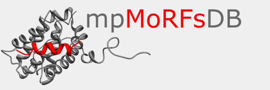

Hi! I'm Foivos, a bioinformatics data scientist and software engineer in Basel, Switzerland. My work focuses on
bioinformatics methods and pipelines for genomics and transcriptomics.
About Me
My name is Foivos and I come from the beautiful island of Corfu, Greece. Since 2014 I live and work in Basel, Switzerland.
I hold a PhD and have over a decade of experience in computational genomics and transcriptomics, building the methods, pipelines, and data infrastructure that turn high-throughput sequencing into reliable biological insight — currently at Novartis BioMedical Research.
Experience
Professional Experience
- Novartis BioMedical Research, Basel — Sep 2021 – Present
- Leading the development of bioinformatics methods and pipelines for genomics and transcriptomics.
- Friedrich Miescher Institute for Biomedical Research (FMI), Basel — Apr 2019 – Aug 2021
- Postdoctoral researcher in the group of Helge Grosshans. Developed computational methods and pipelines to dissect RNA-mediated mechanisms controlling developmental timing and cell fate, using RNA-seq and small-RNA sequencing data.
- Biozentrum, University of Basel — Apr 2018 – Mar 2019
- Postdoctoral researcher in the group of Mihaela Zavolan. Designed and implemented tools and pipelines for multi-modal sequencing data (RNA-seq, poly(A)-seq, ribo-seq, single-cell, and long-read) to investigate RNA processing in health and disease.
- Biozentrum, University of Basel — Jan 2014 – Mar 2018
- PhD candidate in the group of Mihaela Zavolan (RNA Regulatory Networks). Developed novel computational methods for transcript-isoform identification and quantification from RNA-seq data.
Education
- PhD in Bioinformatics — University of Basel, Switzerland, 2018
- Thesis: Computational methods for the identification and quantification of transcript isoforms from next generation sequencing data. Advisor: Mihaela Zavolan.
- MSc in Bioinformatics — National and Kapodistrian University of Athens, Greece, 2013
- Thesis: Database of Molecular Recognition Features (MoRFs) in membrane proteins. Faculty of Biology. Supervisor: Stavros J. Hamodrakas.
- Diploma in Electronic & Computer Engineering (5-year) — Technical University of Crete, Greece, 2011
- Thesis: Development of a Neural Model for Gene Analysis. Digital Image & Signal Processing Lab. Supervisor: Michalis E. Zervakis.
Publications
A complete and up-to-date list is available on Google Scholar and ORCID.
- Katsantoni M, Gypas F, Herrmann CJ, Burri D, Bąk M, Iborra P, Agarwal K, Ataman M, Balajti M, Pozzan N, Schlusser N, Moon Y, Mironov A, Börsch A, Zavolan M, Kanitz A. ZARP: A user-friendly and versatile RNA-seq analysis workflow. F1000Research 2024, 13:533. doi:10.12688/f1000research.149237.1
- Quévillon Huberdeau M, Shah VN, Nahar S, Neumeier J, Houle F, Bruckmann A, Gypas F, Nakanishi K, Großhans H, Meister G, Simard MJ. A specific type of Argonaute phosphorylation regulates binding to microRNAs during C. elegans development. Cell Reports 2022;41(11):111822. doi:10.1016/j.celrep.2022.111822
- Karousis ED, Gypas F, Zavolan M, et al. Nanopore sequencing reveals endogenous NMD-targeted isoforms in human cells. Genome Biology 2021;22:223. doi:10.1186/s13059-021-02439-3
- Gudipati RK, Braun K, Gypas F, Hess D, Schreier J, Carl SH, Ketting RF, Großhans H. Protease-mediated processing of Argonaute proteins controls small RNA association. Molecular Cell 2021;81(11):2388–2402.e8. doi:10.1016/j.molcel.2021.03.029
- Ho-Xuan H, Lehmann G, Glažar P, Gypas F, Eichner N, Heizler K, Schlitt HJ, Zavolan M, Rajewsky N, Meister G, Hackl C. Gene expression signatures of a preclinical mouse model during colorectal cancer progression under low-dose metronomic chemotherapy. Cancers (Basel) 2020;13(1):49. doi:10.3390/cancers13010049
- Jutzi D, Campagne S, Schmidt R, Reber S, Mechtersheimer J, Gypas F, Schweingruber C, Colombo M, von Schroetter C, Loughlin FE, Devoy A, Hedlund E, Zavolan M, Allain FH, Ruepp MD. Aberrant interaction of FUS with the U1 snRNA provides a molecular mechanism of FUS-induced amyotrophic lateral sclerosis. Nature Communications 2020;11(1):6341. doi:10.1038/s41467-020-20191-3
- Gypas F*, Gruber AJ*, Riba A, Schmidt R, Zavolan M. Terminal exon characterization with TECtool reveals an abundance of cell-specific isoforms. Nature Methods 2018;15:837–840. doi:10.1038/s41592-018-0114-z * equal contribution
- Gumienny R, Jedlinski DJ, Schmidt A, Gypas F, Martin G, Vina-Vilaseca A, Zavolan M. High-throughput identification of C/D box snoRNA targets with CLIP and RiboMeth-seq. Nucleic Acids Research 2017;45(5):2341–2353. doi:10.1093/nar/gkw1321
- Mittal N, Kunz C, Gypas F, Kishore S, Martin G, Wenzel F, van Nimwegen E, Schär P, Zavolan M. Ewing sarcoma breakpoint region 1 prevents transcription-associated genome instability. bioRxiv 2015:034215. doi:10.1101/034215
- Gypas F*, Kanitz A*, Gruber AJ, Gruber AR, Martin G, Zavolan M. Comparative assessment of methods for the computational inference of transcript isoform abundance from RNA-seq data. Genome Biology 2015;16(1):150. doi:10.1186/s13059-015-0702-5 * equal contribution
- Gypas F, Mentis AFA. Human microbiome and the methods of its study — metagenomics. Acta Microbiologica Hellenica 2014;59(2).
- Mentis AFA, Gypas F, Mentis AF. Human enteric microbiome: its role in health and disease. Archives of Hellenic Medicine 2013;30(3).
- Gypas F, Tsaousis GN, Hamodrakas SJ. mpMoRFsDB: a database of molecular recognition features in membrane proteins. Bioinformatics 2013;29(19):2517–2518. doi:10.1093/bioinformatics/btt427
- Gypas F, Bei ES, Zervakis M, Sfakianakis S. A disease annotation study of gene signatures in a breast cancer microarray dataset. Conf Proc IEEE Eng Med Biol Soc 2011:5551–5554. doi:10.1109/IEMBS.2011.6091416
- Gypas F. Computational methods for the identification and quantification of transcript isoforms from next generation sequencing data. PhD Thesis, University of Basel, 2018.
Open Source Tools
TECtool
TECtool uses mRNA and 3' end sequencing data to identify novel terminal exonsscAR
Deep-learning model for denoising single-cell omics data by removing ambient signal